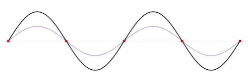
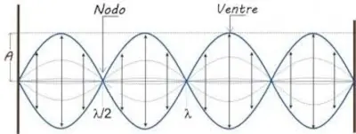
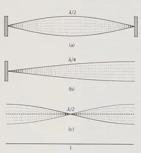
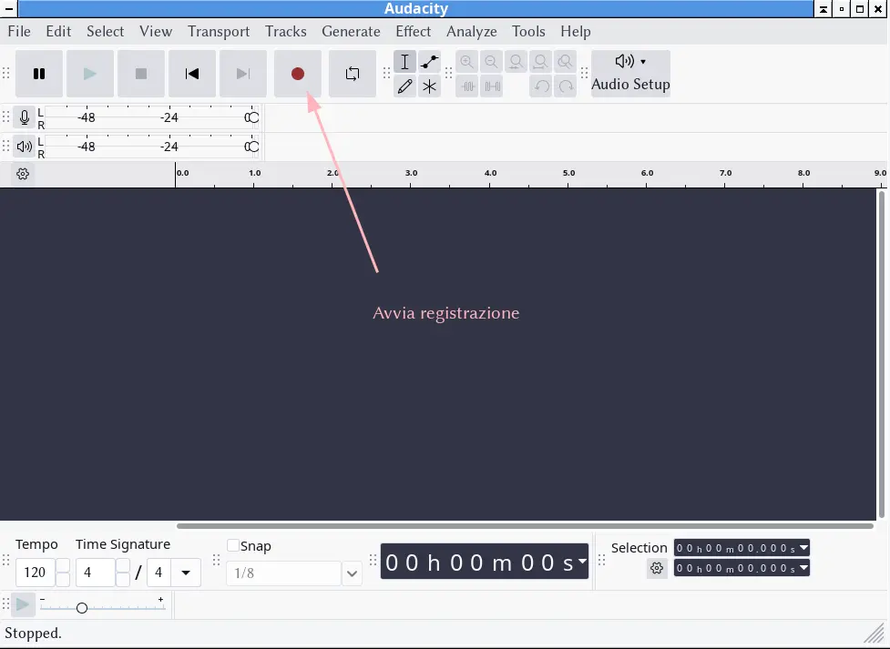
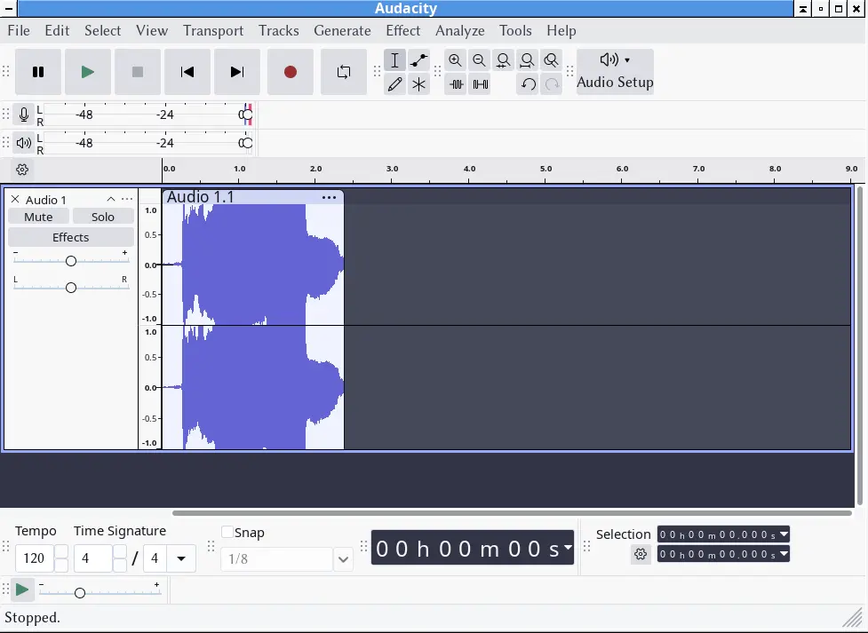
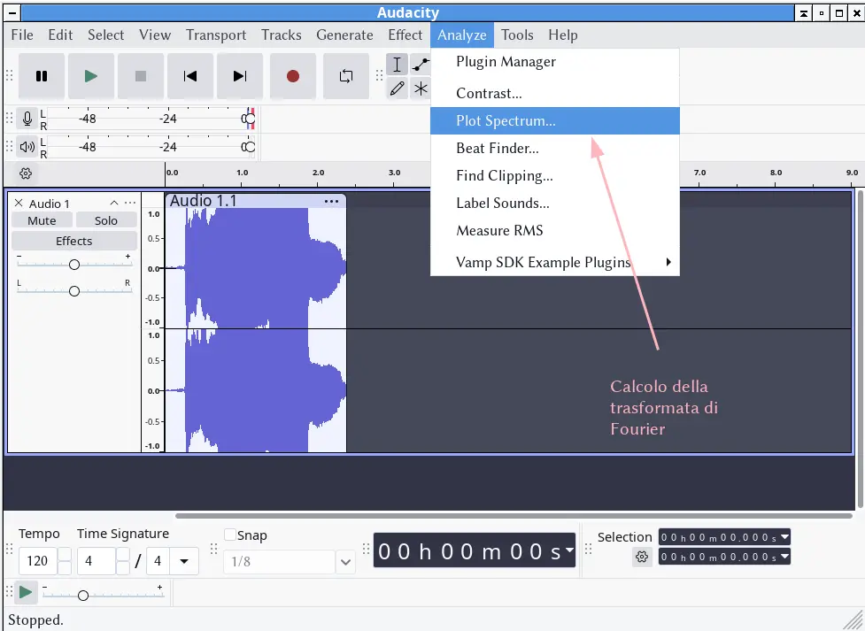
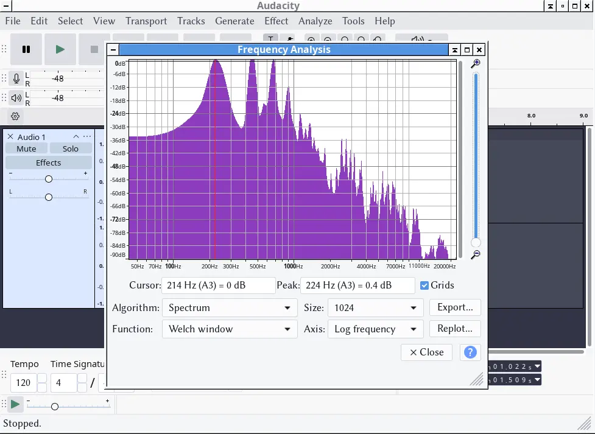
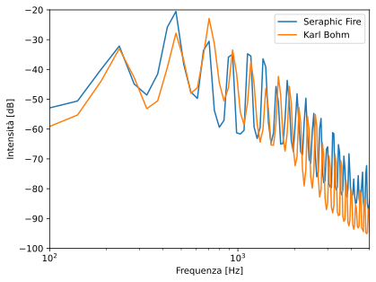
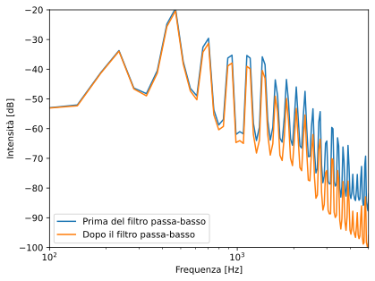

Il motivo per cui la voce o uno strumento musicale emettono più di una frequenza ha a che fare con il processo fisico che emette l’onda.
L’effettiva frequenza di vibrazione di una corda dipende dalla sua tensione (variabile attraverso le chiavi, per gli strumenti a corda) e dal suo materiale
Fisica – Lezione 9
Filtraggio del suono
Maurizio Tomasi (maurizio.tomasi@unimi.it)
Mercoledì 3 dicembre 2025
Introduzione all’argomento di oggi
Il timbro
Timbro del suono
Abbiamo visto l’interferenza tra due onde sonore, ma ovviamente si può sovrapporre qualsiasi numero di onde!
Il motivo per cui due strumenti diversi come un violino e un flauto suonino “diversi” anche quando la nota è la stessa è dovuta proprio al diverso modo con cui le tante onde prodotte dallo strumento si combinano
Il “colore” di un suono è detto timbro, e dipende dal fatto che gli strumenti non emettono mai semplici onde sinusoidali, ma sovrapposizioni di onde
Espressione matematica
Dal punto di vista matematico, il suono emesso dall’applicazione nella pagina precedente si può scrivere una somma di tre sinusoidi
\begin{aligned} P(t) = &A_1 \sin(2\pi\nu_1 t + \varphi_1) +\\ &A_2 \sin(2\pi\nu_2 t + \varphi_2) +\\ &A_3 \sin(2\pi\nu_3 t + \varphi_3) \end{aligned}
In un generico caso della vita reale, anziché tre sinusoidi se ne avranno molte di più, ciascuna caratterizzata dalla sua ampiezza A, frequenza \nu e fase \varphi
Perché tante frequenze?
Gli strumenti a corda
La lunghezza d’onda λ, come sappiamo, dipende dalla frequenza e dalla velocità di propagazione dell’onda attraverso la corda. Anch’essa quindi dipende dalla tensione della corda, ma non solo!
In un qualsiasi strumento a corda come il violino o il pianoforte infatti, la corda non può vibrare con qualsiasi lunghezza d’onda, perché gli estremi sono fissi!
Suono di una corda
Quando il musicista sollecita la corda, produce una somma di oscillazioni con lunghezze d’onda (e quindi frequenze) disposte nella cosiddetta “serie armonica”
La “serie armonica” è definita a partire dalla lunghezza d’onda fondamentale, \lambda_0 = 2L con L lunghezza della corda, e via via dividendo \lambda_0 per un numero intero.
Le “armoniche” sono le frequenze corrispondenti alle \lambda: \nu, 2\nu, 3\nu, etc.

Serie armonica
Ogni nota ha la sua serie armonica. Questa è nel caso di un do:
| Lunghezza d’onda | Frequenza | Altezza del suono |
|---|---|---|
| λ₀ | ν₀ | Do |
| λ₀/2 | 2ν₀ | Do’ |
| λ₀/3 | 3ν₀ | Sol’ |
| λ₀/4 | 4ν₀ | Do’’ |
| λ₀/5 | 5ν₀ | Mi’’ |
Onde stazionarie
Se la corda ha gli estremi fissi, come una chitarra o un violino, si parla di onde stazionarie
Sono dette stazionarie perché l’energia non si propaga, ma resta “intrappolata” nella lunghezza dell’onda
Fisicamente, è un’onda che si propaga in una direzione sovrapposta alla sua onda riflessa (da uno dei due estremi della corda), che viaggia nell’altra direzione.

Nodi e ventri
- Data una certa frequenza di oscillazione (o lunghezza d’onda), ci sono alcuni punti della corda che non vibrano mai: questi sono detti nodi (perché i nodi “tengono ferme” le corde!)
- I punti in cui c’è l’oscillazione massima sono detti ventri

Figure di Chladni
Ernst Chladni (1756–1827) è stato un fisico/musicista, tra i fondatori della moderna acustica
Egli mostrò che in una superficie elastica fatta vibrare (es., la pelle di un tamburo) si osservano delle linee in corrispondenza dei nodi di vibrazione: mise della polvere scura sulla pelle tesa che, percuotendo il tamburo, tendeva a disporsi lungo i nodi
Potete vederne alcuni esempi sul sito Javalab.
E per gli strumenti ad aria?
Nel caso degli strumenti ad aria, come il flauto o l’organo, la presenza di un tubo con due estremità lo rende simile ad una corda
Il comportamento è però più complesso:
- Un’estremità chiusa impedisce (per attrito) alle particelle di gas di vibrare, ed è quindi un nodo
- Presso l’estremità aperta, le particelle sono libere di entrare ed uscire, e l’oscillazione di pressione è massima: è quindi un ventre

Strumenti ad aria
In uno strumento ad aria con un’estremità chiusa ed una aperta (come il clarinetto, che usa un’ancia), le possibili lunghezze d’onda seguono la regola
\lambda_n = \frac{4L}{2n + 1},\qquad\text{ossia}\ 4L, \frac{4L}3, \frac{4L}5, \frac{4L}7, \ldots
In uno strumento ad aria con le due estremità aperte (come il flauto), le possibili lunghezze d’onda seguono invece la regola
\lambda_n = \frac{2L}{n + 1},\qquad\text{ossia}\ 2L, L, \frac{L}2, \frac{L}4, \ldots
Esempio di caso chiuso-aperto
Strumenti ad aria
Le onde stazionarie nelle corde e nei tubi sono le uniche stabili e prolungate nel tempo. Ma, come abbiamo visto, si possono produrre solo se la loro \lambda soddisfa la relazione specifica per il loro tipo: questo determina principalmente il timbro dello strumento
Sono però possibili anche onde che non soddisfano queste relazioni: esse però sono effimere, nel senso che disperdono rapidamente la loro energia scomparendo presto
Anche queste onde effimere però contribuiscono a conferire al suono dello strumento il suo “timbro” caratteristico (flauto, clarinetto, oboe, …)
Scomposizione di Fourier
Scomposizione di Fourier
Abbiamo visto che la sovrapposizione di un suono fondamentale e di armoniche fornisce il “timbro” di quel suono
Un matematico francese, Jean-Baptiste Joseph Fourier (1768–1830), dimostrò una proprietà fondamentale delle onde, non solo sonore: ogni fenomeno periodico può essere scomposto nella somma di oscillazioni sinusoidali

Trasformata di Fourier
La “trasformata di Fourier” è un’operazione matematica che consente, data la misurazione dell’intensità (nel SI) di un’onda sonora, di decomporre quest’onda in una somma di onde sinusoidali
Dal punto di vista pratico, il risultato del calcolo di una trasformata di Fourier è la stima dei valori delle ampiezze, frequenze e fasi nella formula \begin{aligned} P(t) = &\textcolor{#a08}{A_1} \sin(2\pi\textcolor{#a08}{\nu_1} t + \textcolor{#a08}{\varphi_1}) +\\ &\textcolor{#a08}{A_2} \sin(2\pi\textcolor{#a08}{\nu_2} t + \textcolor{#a08}{\varphi_2}) +\\ &\ldots \end{aligned}
Trasformate di Fourier con Audacity
È possibile calcolare la trasformata di Fourier usando il programma open source Audacity, scaricabile dal link www.audacityteam.org
Vediamo ora un esempio interattivo
Esempio con Audacity

Esempio con Audacity

Esempio con Audacity

Esempio con Audacity

Tuba Mirum
Consideriamo come esempio un’esecuzione del Requiem KV 626 di Mozart
In particolare, all’inizio del Tuba mirum c’è un famoso assolo di trombone, dove lo strumento suona senza accompagnamento
Prendiamo due esecuzioni su YouTube di questo brano:
Esecuzione diretta da Karl Bohm (Wiener Symphoniker): https://www.youtube.com/watch?v=0-i5S4uXlNg
Esecuzione dei Seraphic fire: https://www.youtube.com/watch?v=_jFMZ4jguwY
Tuba Mirum

Rappresentazione spettrale della prima nota (Si♭³) del trombone nelle due esecuzioni del Tuba Mirum, calcolata con Audacity.
Applicazioni della trasformata
Anche l’orecchio umano opera una decomposizione in frequenze: è in questo modo che un orecchio allenato distingue le note di un accordo
Un equalizzatore acustico è in grado di modificare i suoni gravi, medi ed acuti decomponendo il suono e agendo sulle ampiezze di alcune frequenze e non altre, come vedremo tra poco
I file MP3 riescono a registrare musica usando 10 volte meno spazio dei vecchi CD, perché usano la decomposizione di Fourier per capire quali frequenze registrare (quelle udibili) e quali è inutile salvare perché inudibili
Suono e rumore
Suono e rumore
Nella vita quotidiana, usiamo spesso le parole “suono” e “rumore” per parlare di fenomeni acustici
Ma sappiamo qual è la differenza tra i due? In particolare, stiamo parlando di un fenomeno fisico oggettivo, o della sensazione che un certo fenomeno fisico (quale?) ci provoca?
Rumore e suono
La differenza tra suono e rumore è la seguente:
Il suono è la sensazione di un’onda sonora regolare, che possiede una sua periodicità
Il rumore è l’esatto opposto: è la sensazione di un’onda sonora priva di periodicità
Vediamo subito la differenza con un esempio interattivo
Il rumore secondo Fourier
- Analizzando con la trasformata di Fourier un suono armonioso, come un accordo di do maggiore, si vede che esso combina preferenzialmente sinusoidi della medesima successione armonica (do, mi sol)
- Analizzando invece il rumore con la trasformata di Fourier, esso è dato dalla sovrapposizione di molte sinusoidi con frequenze casuali, senza una semplice relazione matematica tra loro
- Non esiste una differenza netta tra suono e rumore: aumentando il numero di componenti sinusoidali casuali, è possibile gradualmente mutare un suono in rumore
Filtraggio
Filtraggio
Una volta calcolata la trasformata di Fourier, è possibile modificare l’ampiezza delle sinusoidi per cambiare il timbro del suono, e poi “rimettere insieme” le sinusoidi ottenendo un suono filtrato:
In questo modo si possono ad esempio amplificare i suoni più bassi, o quelli più alti: questo avviene ad esempio in fase di editing della registrazione di un concerto
Esempio

Ho usato Audacity per applicare un filtro passa-basso al Si♭³ del trombone nel Tuba mirum di Mozart: il filtro opera sopra i 1000 Hz, riducendo 6 dB ogni ottava sopra. (Menu “Effect | EQ and filters | Low-pass filter”)
L’effetto Doppler
L’effetto Doppler
Quando un emettitore di suoni si sposta verso l’ascoltatore (nella slide precedente, l’ascoltatore starebbe a destra), le onde arrivano separate da una distanza inferiore, perché ogni onda successiva parte un po’ più vicina all’osservatore della precedente
Viceversa, chi vede l’emettitore allontanarsi (nella slide precedente, un ascoltatore a sinistra) riceve le onde come se avessero una lunghezza d’onda maggiore
Se cambia la lunghezza d’onda λ, cambia necessariamente anche la frequenza: si avverte un suono più acuto (avvicinamento) o più grave (allontanamento) del normale
Formule
Nel caso di avvicinamento con velocità v, si ha
\lambda = \lambda_0\left(1 - \frac{v}{v_\text{suono}}\right), \qquad \nu = \frac{\nu_0}{1 - v/v_\text{suono}}.
con \lambda_0 e \nu_0 riferiti al caso in cui non c’è moto.
Nel caso di allontanamento con velocità v, si ha
\lambda = \lambda_0\left(1 + \frac{v}{v_\text{suono}}\right), \qquad \nu = \frac{\nu_0}{1 + v/v_\text{suono}}.
Esempio
Il clacson di un’auto che viaggia a 50 km/h suona un La a 440 Hz.
Chi è fermo sul bordo della strada e vede l’automobile avvicinarsi, percepirà una frequenza
\nu = \frac{440\,\text{Hz}}{1 - 13{,}9\,\text{m/s} / 343\,\text{m/s}} = 458{,}6\,\text{Hz}
Chi vede l’auto allontanarsi invece percepisce
\nu = \frac{440\,\text{Hz}}{1 + 13{,}9\,\text{m/s} / 343\,\text{m/s}} = 422{,}9\,\text{Hz}
Conclusioni
Cosa sapere per l’esame
- Timbro, scomposizione di Fourier
- Onde stazionarie
- Filtraggio
- Effetto Doppler